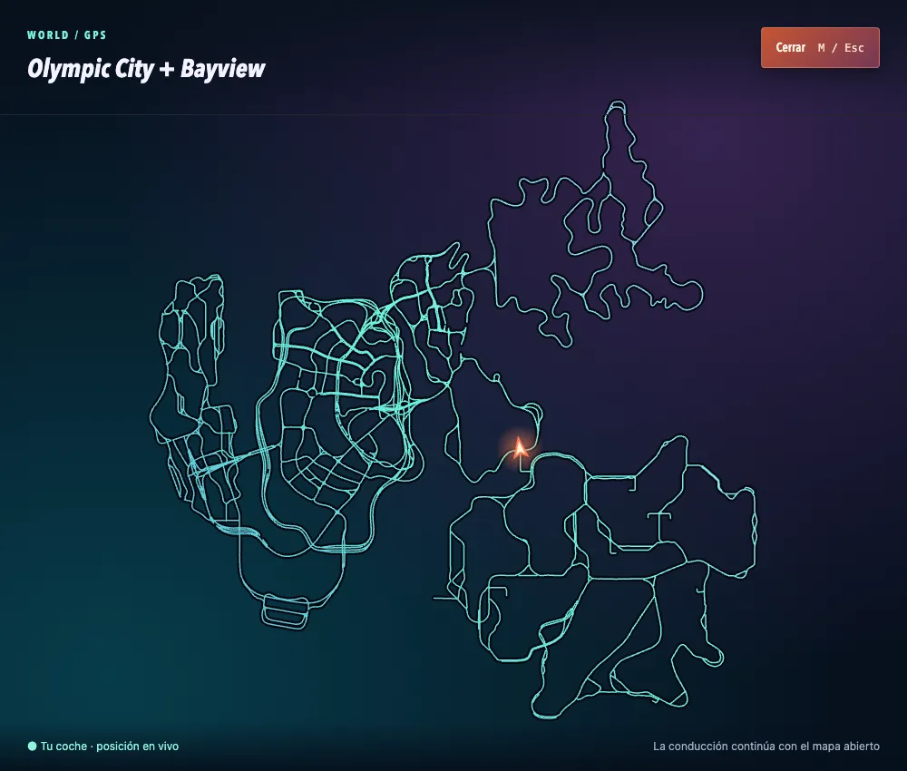

Modo World: Olympic City y Bayview en un solo mapa abierto
El primer Underground nunca te dejó salir de la pista. El modo World sí: convierte Olympic City en manejo libre y la conecta por una carretera con Bayview, la ciudad de Underground 2.

Dos ciudades, una carretera
Olympic City es el escenario de Need for Speed Underground (2003). Bayview es la ciudad abierta de Underground 2 (2004), con sus distritos, autopistas y aeropuerto. En el modo World las dos están en el mismo mapa, y una carretera con puente te lleva de una a otra sin pantalla de carga.
De Underground 2 solo viene la ciudad: calles, edificios, texturas, colisiones y la red de caminos. El cielo, la niebla, la noche mojada, los coches, la física y el HUD siguen siendo de Underground 1, así que Bayview se siente como una parte nueva del mismo juego.
Qué puedes hacer
- Manejar por donde quieras. No hay reloj ni muros: cada distrito de Bayview y cada calle de Olympic City está abierta, con tráfico en los caminos.
- Usar cualquier coche. Todos los coches, piezas y mejoras visuales están disponibles desde el inicio y no cuestan nada.
- Retar a un rival. Acércate a otro corredor para empezar un sprint hacia un punto de cualquiera de las dos ciudades.
- Correr eventos. Las carreras de circuito, sprint, arrancones y drift tienen salidas repartidas por las dos ciudades.
El mapa y el GPS
Presiona M para abrir un mapa a pantalla completa de las dos ciudades mientras el juego sigue corriendo. Haz clic en una calle para marcar un destino: la página traza una ruta por los caminos reales y la muestra en el minimapa del HUD hasta que llegas o la borras. El mapa también puede mover tu coche directo a un punto, útil cuando la otra ciudad queda lejos.

Cómo entrar
En el launcher, deja Juego en World y presiona Jugar. El menú principal del propio juego también tiene una entrada World. World funciona en las dos versiones, Original 2003 y Remaster; fuera de World, la versión Original queda exactamente como salió el juego.
La cantidad de tráfico es una opción del launcher (grupo Jugabilidad): sin tráfico, poco, normal o mucho.
Qué necesita
World es para computadoras. Las dos ciudades juntas pesan mucho más que una pista de carreras, unos 380 MB que llegan mientras manejas, así que los celulares y tabletas empiezan en el juego normal, sin World. Consulta navegadores, celulares y rendimiento para los detalles, y cómo funciona para ver cómo se trajo Bayview.